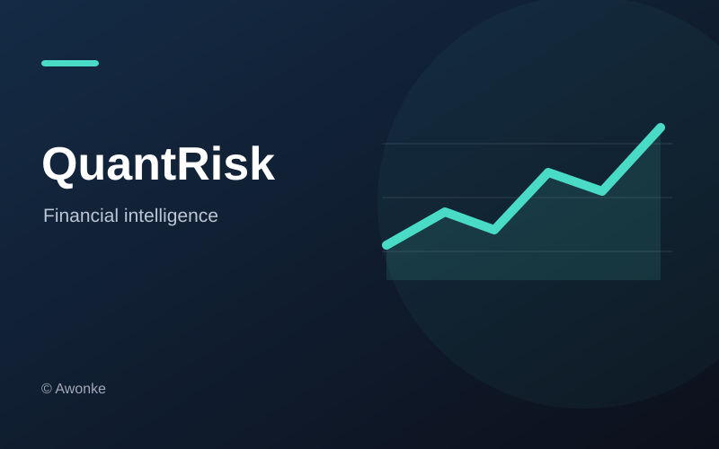
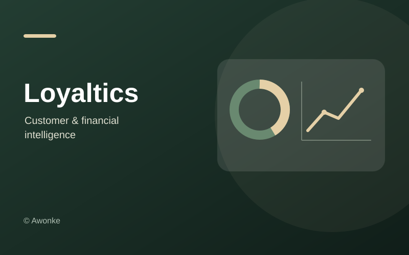
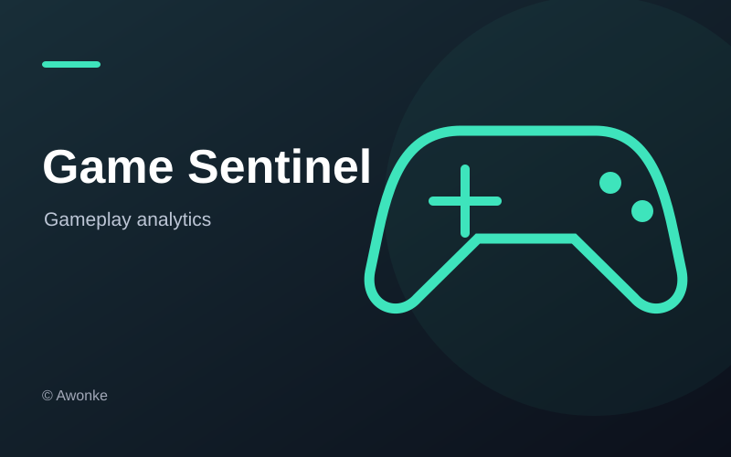
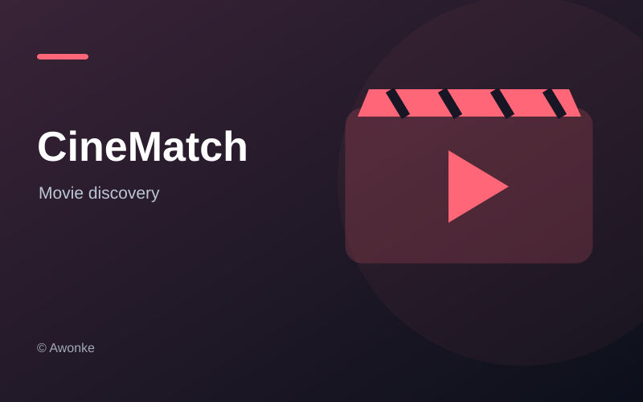
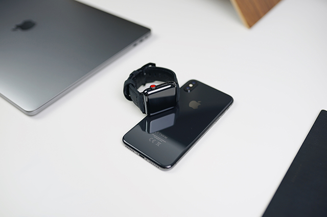

QuantRisk
Loyaltics
GameSense: Game Sentinel
CineMatch- Automobile Fraud Detection

Sentinel Prime: Intrusion Detection System Stock Analysis Dashboard
Stock Analysis Dashboard- Customer Churn Prediction
- Car Price Prediction
- Network Packet TracerGitHub unavailable
- WordSculpt
QuantRisk
Financial predictive analytics, portfolio stress testing and automated assurance.
Python, SQL, FastAPI, machine learning, Monte Carlo, Spark SQLLoyaltics
Financial customer intelligence, calibrated inactivity prediction, transaction turnover forecasting, behavioural segmentation and budget-constrained retention planning.
Python, pandas, scikit-learn, Flask, JavaScript, VercelGameSense: Game Sentinel
Gameplay telemetry analytics, session monitoring and break recommendations.
Python, React, Flask, PostgreSQL, Kafka, DockerCineMatch
Personalised movie discovery with real viewer-rating models, live movie metadata and embedded trailers.
Python, Flask, TF-IDF, collaborative filtering, SVD, BPR, EASE, TMDBAutomobile Fraud Detection
Machine learning framework addressing severe class imbalance in automobile insurance claims.
Python, neural networks, optimisation, explainable AILive preview unavailable GitHubSentinel Prime: Intrusion Detection System
Machine learning-based network intrusion detection.
Python, machine learning, explainable AILive preview unavailable GitHubStock Analysis Dashboard
Interactive stock analysis dashboard.
Python, Dash, Flask, PlotlyLive preview unavailable GitHubCustomer Churn Prediction
Predictive analytics for customer churn.
Python, Dash, Flask, Plotly, machine learningLive preview unavailable GitHubCar Price Prediction
Vehicle price prediction dashboard.
Python, Dash, Flask, Plotly, machine learningLive preview unavailable GitHubNetwork Packet Tracer
Network packet tracing project.
Network analysisLive preview unavailableGitHub unavailableWordSculpt
Word reconstruction application.
C#, text file manipulationLive preview unavailable GitHub